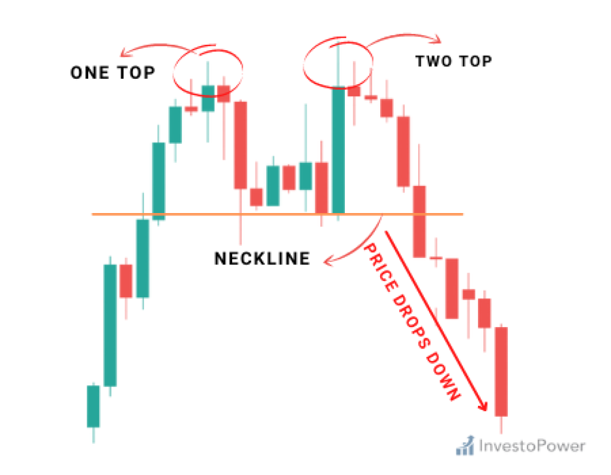

How to trade the double top pattern
The double top pattern can be looked at as a letter M.
When the stock rises it will hit a certain resistance and than drop down. After this drop, It will than form a neckline on the closest support. From this neckline it will
move higher to go retest the previous high it previously made.

What is the psychology of a double top pattern?
The double top psychology is showing that price failed to make a higher high, but instead made a same high, which shows a loss of momentum. The loss
of momentum is showing the buyers arent strong.
How to trade the double top pattern and be profitable?
1) The first way to trade the double top is directly trading at the previous high. With the previous resistance being fresh, your chances of
this trade working out in your favor. Before just jumping into short trade you always want to look how it is approaching resistance. If the candlesticks
are big and momentum is heavy i wouldnt look to short the resistance. I wouldnt look to short it because usually when momentum is heavy approaching a key level
the chances of it breaking are higher. After making sure it approaches resistance slowly, you can take a short trade. Taking profits at the neckline would be ideal.
If this neckline does not hold and it continues you can enter another short trade on the return to the neckline.
2)The second way you can look to trade the double top pattern is waiting on the chance of character. In the picture above it shows how the big brearish red candlesticks
slice right through the neckline indicating a change of character. When it does this is usually slowly returns back to the neckline to confirm if the change
of character was successful or not. When it gets back to the neckline this is when you would take your advantage of shorting this new formed resistance.